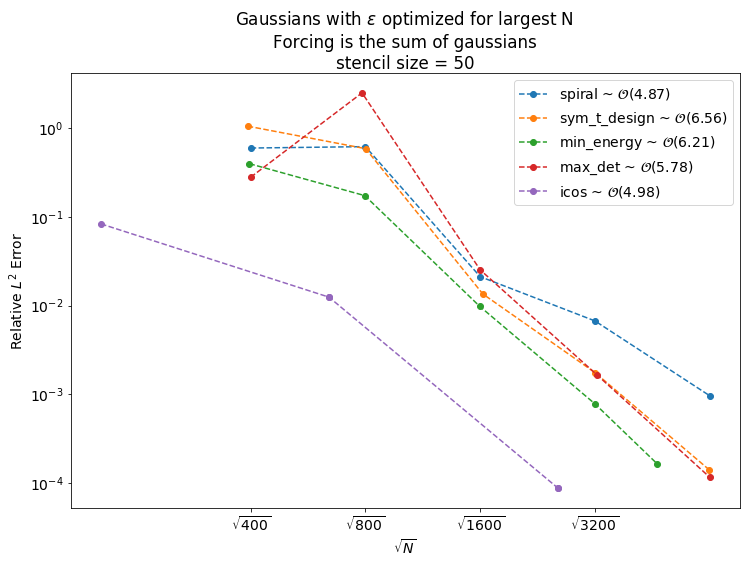

We reivewed Daniel's semi-Lagrangian advection code with a wave speed that is both spatially and temporally dependent. We reviewed Sage's new error plots and suggested improvements and new test. We reviewed Andrews RBF interpolation code.
- Sage's Tasks
- Code
- Research
- Writing
- Misc
- Projection Method Testing
- OGr Testing
- Meeting Followup
- References
Sage's Tasks
Code
- Implement the RBF Symmetric OGr method.
- Implement time-stepping.
- Improve performance of the high order OGr method.
- Test RBF OGr interpolation.
For the differentiation matrices, calculate the eigenvalue with the largest real component. (AR pack routines)Include a new test. For shape-parameter RBFs, optimize $\varepsilon$ on the largest nodeset (most refined) and use the same shape parameter for the smaller nodesets.
Research
- Research the Skeel Condition Number[1].
- Research sphereical harmonics.
Writing
- Write the theorem for exactness.
- Write RBF-FD article.
- Write RBF-FD Projection Method article.
- Write RBF-OGr article.
- Write Numpy Efficiency article. (matrx of vectors)
- Python+Numpy Loops Experiment
Write RBF Interpolation article.
Misc
Request travel funding for PNWNAS.Register for the GRE. (09/21/2018 at the latest)- Select PhD programs.
Projection Method Testing
The error plots in the followup to the previous meeting were unclear in a few ways. In some places it was unclear which forcing function was being used, what stencil sizes were being used. We should develop a checklist to be referenced when including plots in meeting notes so that all of the relevant information is available and clear.
When augmenting with a PHS RBF of degree $p$ with polynomial basis terms up to degree $d$ the theory suggests that one needs $p \leq 2d+1$ in order to have good convergence. In some of the plots shown this is not the case. Either use parameters that fit this criteria or explicitly note that the condition is not satisfied.
OGr Testing
We're interested in the properties of the interpolation matrices used in the OGr methods. In particular...
Meeting Followup
Shape Optimized for the Finest Nodeset
Varun had asked that I run some trials where $\varepsilon$ is chosen so that it optimizes the condition number for a stencil (I chose the first for simplicity) of the finest nodeset. Here are the results.
| node_set | epsilon | N | max_error | rel_L2_error | largest_re_eig | skeel_cond | stencil_cond | target_cond | |
|---|---|---|---|---|---|---|---|---|---|
| 0 | spiral | 4.265276 | 400 | 3.136836 | 0.599750 | 235.751091 | - | - | 1.000000e+12 |
| 1 | spiral | 4.265276 | 800 | 3.660251 | 0.621926 | 531.757438 | - | - | 1.000000e+12 |
| 2 | spiral | 4.265276 | 1600 | 0.145499 | 0.021181 | 1345.498242 | - | - | 1.000000e+12 |
| 3 | spiral | 4.265276 | 3200 | 0.030619 | 0.006703 | 2868.326889 | - | - | 1.000000e+12 |
| 4 | spiral | 4.265276 | 6400 | 0.004431 | 0.000959 | NaN | - | - | 1.000000e+12 |
| 0 | sym_t_design | 4.234377 | 393 | 4.830745 | 1.059085 | 243.052971 | 20.6389 | 309.971 | 1.000000e+12 |
| 1 | sym_t_design | 4.234377 | 801 | 2.594560 | 0.590280 | 532.024430 | 983.245 | 43484 | 1.000000e+12 |
| 2 | sym_t_design | 4.234377 | 1626 | 0.068025 | 0.013504 | 1223.179387 | 245625 | 1.90681e+07 | 1.000000e+12 |
| 3 | sym_t_design | 4.234377 | 3201 | 0.008430 | 0.001750 | 2640.227298 | 8.43843e+07 | 1.99164e+10 | 1.000000e+12 |
| 4 | sym_t_design | 4.234377 | 6386 | 0.000806 | 0.000139 | 6407.804086 | 2.81494e+10 | 2.44322e+13 | 1.000000e+12 |
| 0 | min_energy | 3.687056 | 397 | 1.610455 | 0.399464 | 226.479367 | 58.7019 | 798.66 | 1.000000e+12 |
| 1 | min_energy | 3.687056 | 797 | 0.721329 | 0.174059 | 499.089440 | 6761.95 | 103527 | 1.000000e+12 |
| 2 | min_energy | 3.687056 | 1597 | 0.042599 | 0.009760 | 1133.663617 | 2.60074e+06 | 4.72168e+07 | 1.000000e+12 |
| 3 | min_energy | 3.687056 | 3197 | 0.003424 | 0.000779 | 2473.740832 | 8.77201e+08 | 6.68324e+10 | 1.000000e+12 |
| 4 | min_energy | 3.687056 | 4666 | 0.000685 | 0.000162 | 3710.122526 | 3.50733e+10 | 1.79628e+12 | 1.000000e+12 |
| 0 | max_det | 4.065398 | 400 | 1.126837 | 0.280479 | 220.684213 | 32.0657 | 199.858 | 1.000000e+12 |
| 1 | max_det | 4.065398 | 784 | 10.365440 | 2.516335 | 457.208426 | 1138.46 | 15970.1 | 1.000000e+12 |
| 2 | max_det | 4.065398 | 1600 | 0.108999 | 0.025286 | 1077.207987 | 276427 | 5.79481e+06 | 1.000000e+12 |
| 3 | max_det | 4.065398 | 3249 | 0.007076 | 0.001630 | 2350.671622 | 1.60157e+08 | 4.8177e+09 | 1.000000e+12 |
| 4 | max_det | 4.065398 | 6400 | 0.000498 | 0.000115 | 4733.011091 | 5.28359e+10 | 3.62854e+12 | 1.000000e+12 |
| 0 | icos | 2.729361 | 162 | 0.413509 | 0.083477 | 85.185655 | 21.9454 | 123.058 | 1.000000e+12 |
| 1 | icos | 2.729361 | 642 | 0.052070 | 0.012434 | 427.432562 | 363951 | 4.1486e+06 | 1.000000e+12 |
| 2 | icos | 2.729361 | 642 | 0.052070 | 0.012434 | 427.432562 | 363951 | 4.1486e+06 | 1.000000e+12 |
| 3 | icos | 2.729361 | 2562 | 0.000367 | 0.000087 | 2050.982754 | 1.10624e+11 | 2.88733e+12 | 1.000000e+12 |
| 4 | icos | 2.729361 | 2562 | 0.000367 | 0.000087 | 2050.982754 | 1.10624e+11 | 2.88733e+12 | 1.000000e+12 |
References
- Nicholas J. Higham. Accuracy and Stability of Numerical Algorithms. University of Manchester, 2002. URL: https://epubs.siam.org/doi/abs/10.1137/1.9780898718027.fm, arXiv:https://epubs.siam.org/doi/pdf/10.1137/1.9780898718027.fm, doi:10.1137/1.9780898718027.fm.